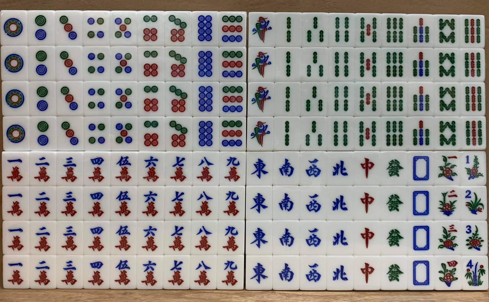
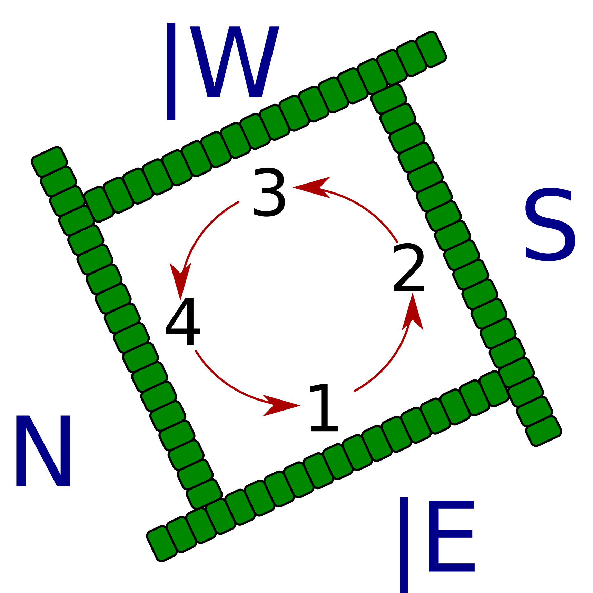

-
開始前，首先要準備一副完整的現代麻雀牌。
標準的香港麻雀會使用上述144張牌。若不打花牌，則洗牌前先抽起兩臺花，只用136張牌。
-
入坐以後，四名玩家須把所有牌牌面向下放在桌上，再把桌上的牌隨機攪動一段時間，直到牌子都洗勻為止。然後，每人把其中36張牌上下排成18棟（若不打花牌，則每人把其中34張牌上下排成17棟），每棟兩張，打橫排好，並推開一段距離。當四人完成後，所有牌在牌桌排得就像一個圍牆，故這些牌亦被稱為牌牆或牌山。

-
莊家即每局的東家，而其餘三家則稱爲閒家。開門方位則由莊家擲骰決定。
莊家擲出三顆骰後，得出的數字，以自己為「1」，按逆時針順序叔數起。
-
由莊家開始，每人一次拿兩棟（即四隻牌），然後到下家拿牌，如此類推。
直到每人拿了三次（即有十二隻牌），莊家要開始跳牌。
-
莊家總共是有十四隻牌，而其他玩家有十三隻牌。掀牌後，先查看有沒有「花牌」。
如有「花」，從莊家開始「補花」，在所有牌的尾端摸牌，有一隻「花」，補一隻牌，如此類推。
直到所有玩家都補完「花」。如果在「補花」的過程中，也摸到了「花」，就要等一圈人「補花」後才能再「補花」。
-
完成「理牌」、「補花」的過程後，玩家就可以開始遊戲。
由莊家開始，依逆時針次序，每位玩家均按照以下程序行牌，直到牌局結束：
-
從牌牆裏摸一張牌（莊家跳牌的程序實際上是拿好13張牌加第一次摸牌，所以莊家起手時會跳過這步驟）
- 除了莊家第一輪起手時，玩家都要摸一隻牌，棄一隻牌。
-
如果上家棄置的牌，能跟自己手上的牌組成「上」、「碰」或「槓」，可以不從牌牆裏摸牌，改爲把該棄牌拿到自己面前，並翻開該組「對」、「碰」或「槓」。
- 如果手牌已完成食糊牌型，可喊叫「食」以表示食糊，牌局結束；
- 如果「開槓」後均須即時在牌牆尾端補牌；
-
如果摸到花牌後，不論是否與自己的風位配合，都要翻開，並立即在牌牆尾端補牌；
-
但遇到以下情況時，可以打斷原來的行牌順序：
-
其他玩家的棄牌能跟自己手上的牌組成「碰」，可選擇喊叫「碰」，把別人打出的牌拿到自己面前，並翻開該組「碰」牌，接着打出一張牌
-
其他玩家的棄牌能跟自己手上的牌組成「槓」，可選擇喊叫「槓」，把別人打出的牌拿到自己面前，並翻開該組「槓」牌，接着從牌牆尾端補牌，再打出一張牌
-
其他玩家「出銃」，即是他的棄牌能跟自己的手牌組成食糊牌型，可選擇喊叫「食糊」，牌局結束
-
其他玩家「槓」牌時，若該牌能跟自己手上的牌組成食糊牌型，則可選擇搶槓並食糊，牌局結束。但若其他玩家是暗槓，則只有十三么才可以搶暗槓。